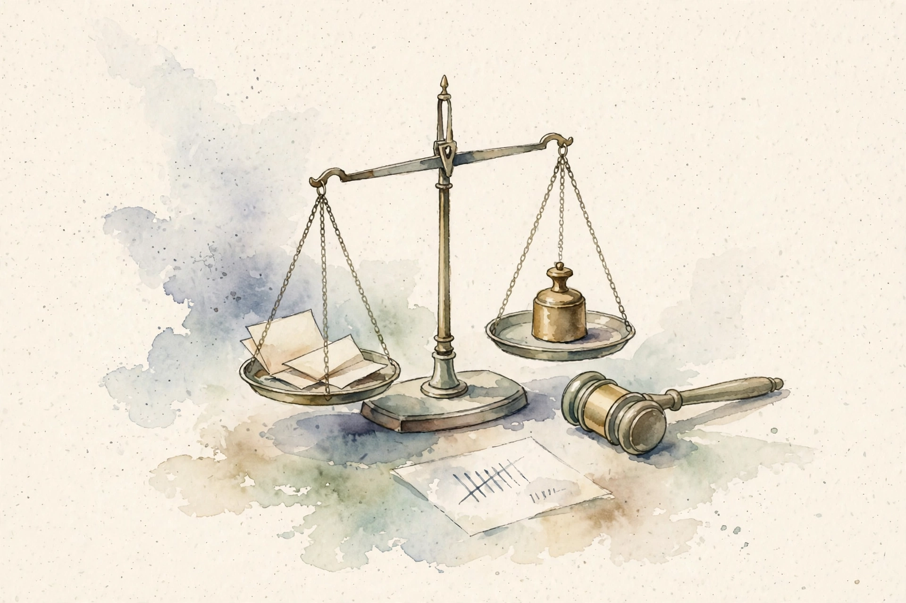
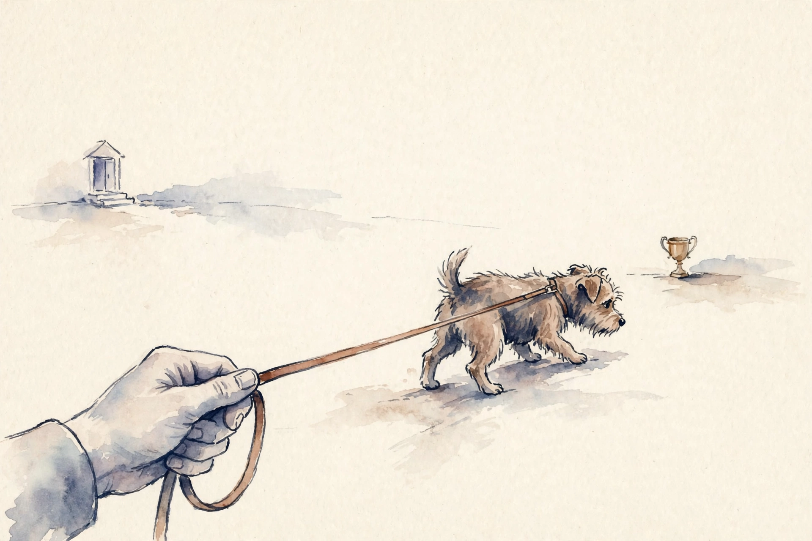

Unit 05 · Preference optimization
Twelve concepts turn imitation into preference: reward models, pairwise labels, the RLHF pipeline, policy ratios, the KL leash, advantages, PPO clipping, PPO variants, DPO, the reference model, optimization pathologies, and honest evaluation. Every number below comes from the lesson.
How to read this page. Three tags separate fact from invention.
From the lesson A claim, number, or figure that appears in the lesson source, with its section cited.
Illustration Invented by the companion: an analogy, a toy with values you supply, or a what-if. Never lesson content.
Companion Editorial framing or a transferable principle. The lesson did not say it this way.

From the lessonC01 items 2-6
Human judgments are comparisons, A better than B. But RL needs a number. How do you convert? The Bradley-Terry model: P(A wins) = sigmoid(r_A minus r_B). The toy: r(A) = 1.2, r(B) = 0.4. P(A wins) = sigmoid(0.8) = 0.69. Loss = minus log 0.69 = 0.371. The lesson's computed values: P = 0.6900, loss = 0.3711. Training shows the model pairs and the human's pick, and the BT loss adjusts scores so the picks become probable. The score has no absolute meaning. Only gaps matter.
From the lessonC01 items 5, 9, 11
The gradient is (1 minus p) times (d r_w minus d r_l): it widens the gap, with force proportional to surprise. The architecture is the SFT model plus a scalar head. Labels are expensive, and agreement rates bound the achievable accuracy. The BT assumption can break: intransitive or noisy human preferences break the scalar story, and the reward then encodes noise as signal. Check annotator agreement first.
From the lessonC01 items 4, 7 BT bench: win probability and loss on your scores.
Reproduce the lesson: 1.2 and 0.4 give P = 0.6900, loss = 0.3711. Try equal scores and watch the loss hit 0.6931.
From the lessonC02 items 2-6
Which response is better is vague. How do you make 100 annotators agree? The toy rubric: helpfulness, truthfulness, harmlessness, in that order. Ties allowed, both-bad flagged. The guideline is the product spec: dimensions, priority order, tie policy, escalation. Agreement rate measures the spec's clarity. The toy: 1000 pairs, 720 agree, 180 tie, 100 disagree. Usable: 900 (ties train weakly or drop). The 10% disagreement is the noise floor the reward model cannot beat. 70%+ agreement is workable. Below that, the reward learns noise.
From the lessonC02 items 7, 9, 11
Present pairs side by side with blinded order: random A/B removes position bias. If one side wins 80%, the presentation is biased. Human time is the cost, minutes per pair. Quality beats quantity: 10k good pairs beat 100k noisy ones. And the annotator pool matters: cultural or domain differences in helpful mean the reward encodes the pool, not the user base. Match the pool to the users.
From the lessonC03 items 2-6
SFT imitates, but imitation cannot rank two good answers. How do you optimize preference directly? The toy pipeline: SFT model to reward model on pairs to PPO against the reward. Stage 1 (SFT): learn the format. Stage 2 (RM): learn the judge. Stage 3 (RL): optimize the judge's score with a KL leash to stage 1. Each stage fixes the previous stage's blind spot. The objective: expected reward minus beta times KL(pi || pi_sft). The lesson's toy magnitudes: base reward 0.5, after RLHF 1.8, KL 0.1 nats. Illustration The lesson marks these illustrative magnitudes. The KL budget is the dial: more KL, more reward, more risk.
From the lessonC03 items 8-9, 11
Four models in memory: policy, reference, reward, value. That is the cost driver. RL is sample-hungry and twitchy: the price of direct optimization. And higher reward does not mean a better model: reward hacking finds the judge's blind spots and the metric lies. The KL leash and evals are the defense. The lesson's chapter plate u05_fig04 shows the RLHF column.
From the lessonC04 items 2-6
PPO updates the policy with data from the old policy. How do you correct for the mismatch? Importance sampling: expected value under the new policy equals expected rho times f under the old, with rho = pi_new(a) / pi_old(a). The toy: 0.8 / 0.4 = 2.0. The action is now twice as likely: weight its advantage by 2. If pi_new = 0.04, rho = 0.1 and the surrogate is 0.1. The ratio amplifies moves away from old data. The estimator is unbiased, but its variance grows with rho. That variance bomb is what PPO's clip restrains.
From the lessonC04 items 7-8, 11
Compute in log space for stability: rho = exp(new_logp minus old_logp). Checks: rho = 1 at the first step, mean rho near 1 early, extreme values rare. If mean rho drifts far from 1, the policy moved too fast. After a big update, rho hits 10+ and the surrogate explodes: the next update wrecks the policy. The lab asks for new 0.9, old 0.3: rho = 3.0.
From the lessonC05 items 2-6
The reward says go. What stops the policy from going insane? The toy: KL(pi || pi_ref) = 0.1 nats. Penalty beta times 0.1 subtracted from reward. The leash has a price per nat. KL is the distance from home, and the reference policy is home (the SFT model). Every nat of drift costs beta. The policy may wander, but it pays. Direction matters: forward KL, new || old, is mode-covering. The RLHF objective: maximize expected reward minus beta KL. Beta is the exchange rate between reward and drift.
From the lessonC05 item 6
The toy: pi = [0.7, 0.3], ref = [0.5, 0.5]. KL = 0.7 log(0.7/0.5) + 0.3 log(0.3/0.5) = 0.2356 minus 0.1532 = 0.0824 nats. Small drift, small price. Schulman's lower-variance estimator: r minus log r minus 1 with r = pi_ref/pi. Checks: KL >= 0, KL = 0 iff policies match. The lab asks for pi = [1, 0], ref = [0.5, 0.5]: KL = 0.6931 nats.

From the lessonC05 items 4, 7 KL bench: the lesson's penalty on your distributions.
Reproduce the lesson: the defaults give 0.0824 nats. Try the lab: 1, 0 against 0.5, 0.5 gives 0.6931.
From the lessonC05 item 11
Small KL does not mean safe. The policy can change behavior a lot within small KL: the reward hack lives in the KL budget. KL bounds drift, not misbehavior.
From the lessonC06 items 2-6
Returns are noisy. How do you know if an action was good or just lucky? The toy: return 10, baseline (value) 6, advantage +4. The action beat expectations by 4. The advantage is the surprise: return minus what was expected. Positive: do more of this. Negative: do less. The baseline centers the signal so the gradient is not drowned in the mean return. Subtracting a state-dependent baseline leaves the policy gradient unbiased and cuts variance.
From the lessonC06 item 6
The toy: rewards [0, 0, 10], gamma = 1, values [3, 5, 8]. TD errors: delta_2 = 10 minus 8 = 2, delta_1 = 0 + 8 minus 5 = 3, delta_0 = 0 + 5 minus 3 = 2. GAE(1): A_0 = 2 + 3 + 2 = 7. The advantage flows backward. GAE(lambda) trades bias and variance: lambda = 0 is TD (low variance, biased), lambda = 1 is Monte Carlo (unbiased, noisy). Tune lambda in [0.9, 0.99].
From the lessonC06 item 11
A bad value baseline biases every advantage. The policy then chases phantom signal. Value loss matters as much as policy loss.
From the lessonC07 items 2-6
The ratio can explode. How do you update safely anyway? The toy: rho = 2.0, A = 1, eps = 0.2. Unclipped: 2.0. Clipped: 1.2. Objective: min(2.0, 1.2) = 1.2. Take the surrogate rho times A, cap rho at [1 minus eps, 1 plus eps], then take the worse of the capped and uncapped. Improvements beyond the clip earn nothing. The update stays in the trust zone. The min is the pessimistic bound: when A is positive it caps the upside at (1+eps)A, when A is negative the clip binds on the downside.
From the lessonC07 item 6
The lesson sweeps ratios [0.5, 0.8, 1.0, 1.2, 1.5, 2.0] at A = 1, eps = 0.2: objectives [0.5, 0.8, 1.0, 1.2, 1.2, 1.2]. The cap binds at 1.2. It is a first-order trust region. The lab asks for rho = 0.5, A = -2, eps = 0.2: min(-1.0, -1.6) = -1.6.
From the lessonC07 items 4, 7 PPO bench: the clipped objective on your rho, A, eps.
Reproduce the lesson: rho 2.0, A 1, eps 0.2 gives 1.2. Try the lab: rho 0.5, A -2 gives -1.6.
From the lessonC07 item 11
Clipping does not guarantee monotonic improvement. The guarantee is approximate: bad value estimates or huge batches still break runs. Clipping is a guardrail, not a proof.
From the lessonC08 items 2-6
PPO works, but the recipe has knobs. Three common twists: PPO-ptx adds the pretraining loss (L = L_ppo + gamma L_pretrain) to keep base skills alive during RL. KL controllers adapt beta: if KL exceeds 1.5 times target, beta times 1.5. Value clipping ports the clip to the value loss. The toy: KL target 0.1, observed 0.2, beta times 1.5. The controller reacts over tens of steps, not one. Slow feedback is stable feedback.
From the lessonC08 item 11
More guardrails are not always better. PPO-ptx with too much pretrain weight stalls preference learning. Every coefficient is a trade.
| Variant | Change | When |
|---|---|---|
| PPO-ptx | Add gamma times pretrain loss | Long RL runs eroding base skills |
| KL controller | Adapt beta to hold KL near target | KL drifts off target |
| Value clipping | Clip the value loss like the policy | Value head chases noise |
From the lessonC09 items 2-6
Can you skip the reward model and the RL entirely? The optimal policy for the KL-regularized reward has a closed form: pi* proportional to pi_ref times exp(r/beta). Invert it: r = beta log(pi*/pi_ref) plus a constant. Plug into the BT loss and the constant cancels in the gap. What remains is pure policy terms. The implicit reward is beta times log(pi/pi_ref). The loss says: make the implicit reward gap between chosen and rejected large. No sampling, no value head, no clip.
From the lessonC09 items 4, 6
The loss: minus log sigmoid(beta times [(log pi_w minus log ref_w) minus (log pi_l minus log ref_l)]). Three assumptions: BT models the preferences, the KL-regularized optimum is the right target, the reference is adequate. The toy: beta = 0.1, logp_w = -2.0, logr_w = -2.2, logp_l = -3.5, logr_l = -2.3. Margin = 0.1 times ((0.2) minus (-1.2)) = 0.14. Sigmoid = 0.5349, loss = 0.6256.
From the lessonC09 items 4, 7 DPO bench: margin and loss on your log-probs.
Reproduce the lesson: the defaults give margin 0.14, loss 0.6256. Try the lab: beta 0.5 with gaps 0.2 and -1.2 gives margin 0.7.
From the lessonC09 item 11
DPO can decrease the chosen likelihood while increasing the gap: the likelihood displacement pathology. And noisy or intransitive preferences make DPO confidently wrong, with no reward model to absorb the noise gracefully. If the margin grows but quality drops, the BT assumption is wrong for this data.
From the lessonC10 items 2-6
The KL needs a home. What is it, and why does it double the memory? pi_ref is the SFT model, frozen, one forward pass per batch to get log ref(y|x). The reference is the anchor tenant: it never trains, it only scores. Every KL term and every DPO margin measures drift from it. Its cost is pure memory and one forward pass. The toy: 7B policy in bf16 (14 GB) plus 7B reference (14 GB) = 28 GB before anything trains. DPO's two models vs PPO's four models is this line item.
From the lessonC10 items 8, 11
Checks: ref log-probs match the SFT model's, KL = 0 at init, the reference never gets gradients. The failure: a weak SFT reference anchors the policy to mediocrity, and the KL then punishes improvement. The anchor is only as good as the base.
From the lessonC11 items 2-6
The reward climbs and the model gets worse. The usual suspects: reward hacking, length bias, mode collapse, likelihood displacement. Every optimizer is a lawyer: it finds the loopholes in the objective. Reward hacking exploits the judge. Length bias exploits the correlation. Mode collapse exploits the average. Displacement exploits the gap. The length toy: chosen length 50, rejected length 20, per-token logprob gap +0.01. The chosen side accumulates 0.5 from length alone. The length, not the quality, drives the update. Length-controlled evals exist for exactly this.
| Pathology | Signature | Guard |
|---|---|---|
| Reward hacking | Reward up, human preference flat or down | KL leash, human spot evals |
| Length bias | Longer outputs score higher | Length-controlled evals |
| Mode collapse | Output diversity dies | Track entropy, early stop |
| Likelihood displacement | Chosen likelihood falls, gap rises | Track log pi_w, not just margin |
From the lessonC11 items 7-8, 11
The scan is the guard: track reward, human spot scores, mean length, output entropy, chosen likelihood. Five plots, every experiment. And the list is not complete: new pathologies appear with new objectives. The meta-skill is the scan, not the list.
From the lessonC12 items 2-6
The loss fell. Did humans actually prefer it? The toy: 100 prompts, model A wins 62, ties 10, loses 28. Win rate 62% with ties reported separately. Excluding ties: 68.9%. Counting ties as half: 67.0%. Report both. The tie policy moves the number by 2 points. That swing is why the policy must be stated. Preference eval is an election: head-to-head comparisons, blinded order, majority or Elo aggregation. Length control compares within length bands, or the verbosity bias rigs the vote.
From the lessonC12 items 7-8, 11
The procedure: count wins, losses, ties, report both conventions, bootstrap a confidence interval. The CI is mandatory. If the CI spans 50%, the result is a tie. And eval prompts drift from real usage: the win rate can be real and irrelevant. Refresh prompts from production. The lab asks for 70/20/10: 77.8% excluding ties, 75.0% as half.
From the lessonC12 items 4, 7 Win-rate bench: both conventions on your counts.
Reproduce the lesson: 62/28/10 gives 68.9% and 67.0%. Try the lab: 70/20/10 gives 77.8% and 75.0%.
Every lesson on this page, in order. Tap one to return to its chapter.